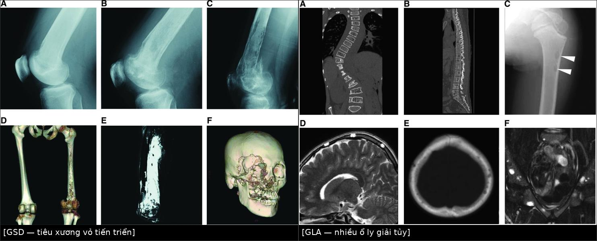
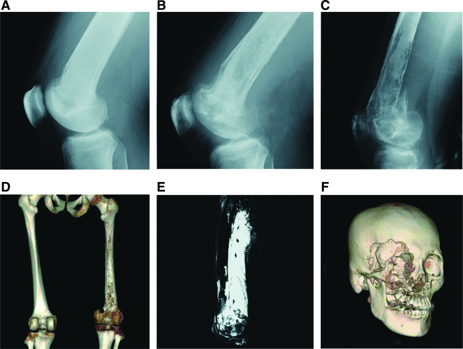
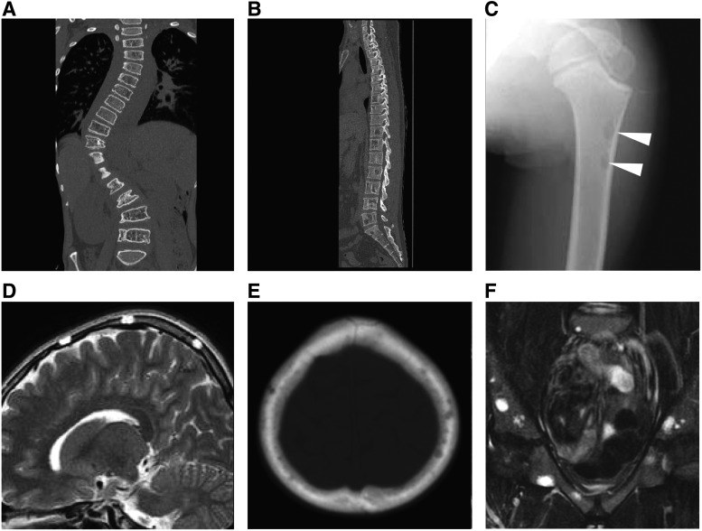
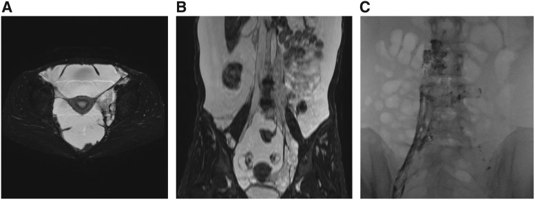
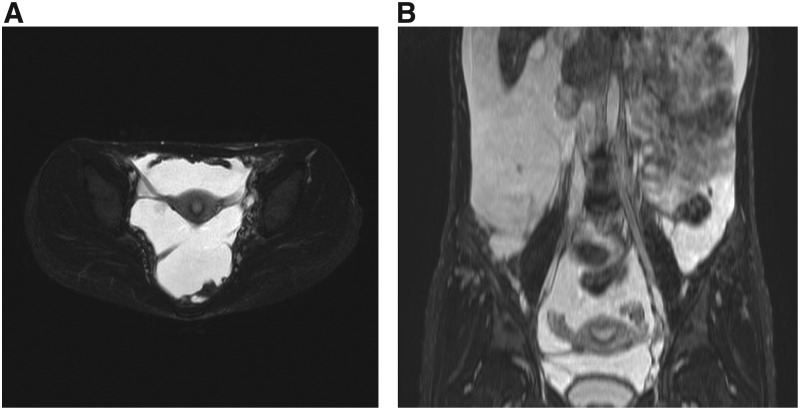

077 — Loạn sản mạch bạch huyết lan tỏa (GLA) & bệnh Gorham–Stout: xương "biến mất", tràn dưỡng trấp và sirolimus
Tags: pattern:loansan-bach-huyet pattern:tieu-xuong pattern:tran-dich-duong-trap vung:da-he vung:phoi vung:xuong anatomy:ong-nguc protocol:MRI-toan-than protocol:lymphangiography
Mức chắc chắn (certainty): tổng hợp y văn (literature synthesis) — bài tổng hợp từ review mở có số liệu định lượng và ca minh họa, chưa gắn một ca nguyên văn duy nhất của nhóm.
1. Tổng quan — vì sao mạch bạch huyết sai chỗ lại "ăn" xương và gây tràn dịch
- GLA (generalized lymphatic anomaly) là dị dạng mạch bạch huyết lan tỏa nhiều cơ quan: phổi, trung thất, lách, xương và mô mềm. GSD (Gorham–Stout disease) là dị dạng bạch huyết trong xương gây tiêu xương tiến triển, còn gọi "bệnh xương biến mất" (vanishing bone disease). Cả hai nằm trong nhóm dị dạng bạch huyết phức tạp (complex lymphatic anomalies) cùng với KLA (kaposiform lymphangiomatosis) và CCLA (central conducting lymphatic anomaly).
- TẠI SAO hình ảnh giống "nang dịch": mô bạch huyết sai chỗ là các kênh chứa dịch giàu protein, không phải mô đặc. Dịch này đồng đậm độ với nước trên CT (khoảng 0–20 HU), giảm tín hiệu trên T1W, tăng tín hiệu rất mạnh trên T2W/T2 fat-sat (nước tự do), không hạn chế khuếch tán (ADC cao, khác áp-xe/u đặc), và không ngấm thuốc trừ vách/bao. Đó là lý do một "khối" T2 sáng, không ngấm, nhiều thùy trong trung thất hay sau phúc mạc phải nghĩ mạch bạch huyết trước khi nghĩ u.
- TẠI SAO xương bị tiêu ở GSD: kênh bạch huyết xâm nhập tủy xương, tăng sinh và kích hoạt hủy cốt bào (osteoclast) qua trục VEGF-C/VEGFR-3, IL-6 và RANKL/OPG; tủy bị thay thế, vỏ xương bị ăn mòn từ trong ra. Trên phim, tổn thương ly giải vỏ xương tiến triển, bờ không rõ, có thể vượt qua khớp — khác nhiều ổ ly giải nhỏ trong tủy của GLA/KLA.
- Định lượng nằm lòng:
- Tỉ lệ tử vong: GLA 28,6% (10/35), KLA 55,6% (5/9), khác biệt có ý nghĩa (p = 0,0268); tử vong gắn với bệnh phổi tiến triển và rối loạn đông máu.
- KLA có tiểu cầu 50.000–100.000/µL, tràn dịch màng phổi/màng tim xuất huyết, khối trung thất; đây là các dấu hiệu phân biệt với GLA.
- Sirolimus: đáp ứng một phần lúc 6 tháng ở 100% (7/7) GLA, 100% (3/3) GSD, 71% (5/7) KLA (thử nghiệm tiến cứu của Adams, trích trong review). Nồng độ đáy mục tiêu 5–15 ng/mL ở 76% (19/25) nghiên cứu.
- Xạ trị GSD: ổn định bệnh ở ~80% ca; liều chia nhỏ 40–45 Gy (Dunbar), dải 36–45 Gy có hiệu quả tin cậy; liều thấp 16–20 Gy có thể giảm triệu chứng lồng ngực (tràn dưỡng trấp, tràn dịch màng tim).
- Dịch dưỡng trấp (chylothorax): dịch màng phổi do rò bạch huyết, triglyceride > 110 mg/dL và có chylomicron; nhưng trong GLA/GSD, tràn dịch có thể là dưỡng trấp hoặc dịch thấm do tắc dẫn lưu — cần lymphangiography/DCMRL để tìm ổ rò trước khi can thiệp.
2. Mẫu hình + chẩn đoán phân biệt theo vị trí (gamut)
Mẫu hình chính: (a) nhiều ổ ly giải xương nhỏ trong tủy, hoặc tiêu xương vỏ tiến triển; (b) tràn dịch màng phổi/màng tim, khối trung thất; (c) dịch ổ bụng, nang lách, khối sau phúc mạc; (d) phù bạch mạch/lymphorrhea mô mềm.
Gamut theo vị trí:
- Xương: GSD (tiêu xương vỏ tiến triển), GLA/KLA (nhiều ổ ly giải tủy, không tiến triển), dị dạng bạch huyết xương đơn độc, và các "bệnh giống Gorham": tiêu xương đa ổ vô căn, tiêu xương đa ổ di truyền, tiêu xương do thần kinh, LCH, di căn, myeloma, viêm xương tủy, u nâu cường cận giáp, CRMO.
- Trung thất/phổi: GLA, KLA, CCLA, dị dạng bạch huyết dạng nang đơn độc, lymphangiectasia phổi, lymphoma, lao, tràn dưỡng trấp vô căn/sau mổ.
- Lách: GLA (nhiều nang lách), LAM, lymphoma, di căn, áp-xe, nang biểu mô, nang sán.
- Mô mềm/da: GLA, KLA, dị dạng bạch huyết mô mềm, dị dạng tĩnh mạch–bạch huyết, lipoma, sarcoma.
Mẹo nhớ nhanh: trẻ/thanh niên + nhiều "nang" T2 sáng không ngấm ở nhiều cơ quan + xương ly giải + nang lách → nghĩ GLA; xương vỏ bị ăn mòn tiến triển từng tháng, có thể qua khớp → nghĩ GSD; tràn dịch xuất huyết + tiểu cầu thấp + khối trung thất → nghĩ KLA; chỉ có giãn ống bạch huyết trung tâm, không tổn thương nhu mô → nghĩ CCLA.
3. Bảng so sánh phân biệt (ma trận đối chiếu)
| Thực thể (entity) | Hình ảnh điển hình | Chốt vào (rule-in) | Chốt loại (rule-out) | Gợi ý xác nhận |
|---|---|---|---|---|
| GSD (Gorham–Stout) | Tiêu xương vỏ tiến triển, bờ không rõ, có thể vượt khớp; xương chi, sườn, sọ, xương đòn, cột sống cổ; gãy bệnh lý; mô mềm quanh xương T2 sáng | Tiêu xương vỏ tiến triển theo thời gian + tổn thương mô mềm bạch huyết lân cận + loại trừ nguyên nhân khác | Nhiều ổ ly giải nhỏ trong tủy, không tiến triển, không mất vỏ xương → GLA/KLA | X-quang/CT nhiều thời điểm; MRI T2 fat-sat; sinh thiết có D2-40; ¹⁸F-NaF PET/CT |
| GLA | Nhiều ổ ly giải trong tủy, cột sống (thắt lưng hay gặp) và sọ; nang lách; tràn dịch màng phổi/màng tim; khối trung thất; ascites | Tổn thương bạch huyết nhiều cơ quan + nang lách + nhiều ổ ly giải tủy | Tiêu xương vỏ tiến triển, xương chi, gãy bệnh lý → GSD; tràn dịch xuất huyết + tiểu cầu thấp → KLA | WB-MRI T2 fat-sat; CT/MRI sọ–cột sống; DCMRL |
| KLA | Khối trung thất, tràn dịch màng phổi/màng tim xuất huyết, dày bó mạch–phế quản và vách liên tiểu thùy; tổn thương lách; tiểu cầu thấp | Tràn dịch xuất huyết + tiểu cầu 50.000–100.000/µL + khối trung thất | Không có tràn dịch xuất huyết, tiểu cầu bình thường → GLA | Sinh thiết: tế bào hình thoi D2-40+; Ang-2 cao; theo dõi đông máu |
| CCLA | Giãn/dyskinesia ống bạch huyết trung tâm; tràn dưỡng trấp, ascites, phù; không tổn thương nhu mô | DCMRL thấy giãn hoặc rối loạn dòng ống bạch huyết trung tâm | Có tổn thương nang ở phổi/lách/xương → GLA | DCMRL; lymphangiography qua hạch bẹn; EPHB4 nếu gia đình |
| Dị dạng bạch huyết đơn độc | Một khối nang đơn độc, vách mỏng, T2 rất sáng, thường ở cổ/trung thất/sau phúc mạc | Một khối nang, không tổn thương cơ quan khác | Nhiều cơ quan, xương, lách → GLA | US/CT/MRI; không cần sinh thiết nếu điển hình |
| Di căn/myeloma/LCH | Nhiều ổ ly giải, bờ rộng, có khối mô mềm, ngấm thuốc; tuổi lớn hơn; LCH có bờ vát | Tiền sử ung thư, tổn thương ngấm thuốc, tăng canxi/máu, tuổi > 40 | Bệnh nhân trẻ, nhiều nang bạch huyết, nang lách, không ngấm | CT xương, MRI, sinh thiết; điện di/LCH markers |
| Tràn dưỡng trấp vô căn | Chỉ tràn dịch màng phổi dưỡng trấp, không tổn thương xương/lách/trung thất | Ổ rò đơn độc, không tổn thương cơ quan khác | Có nang lách, ly giải xương, khối trung thất → GLA/GSD/KLA | Lymphangiography/DCMRL; loại trừ ung thư, lao, chấn thương |

Trái: GSD — X-quang 6 tháng cho thấy tiêu xương vỏ tiến triển rồi gãy bệnh lý; 3D-CT xương gần như "biến mất"; MRI T2 fat-sat có tín hiệu cao mô mềm quanh xương. Phải: GLA — nhiều ổ ly giải nhỏ trong tủy (cột sống, sọ, chỏm xương đùi), không tiến triển, nhiều nang T2 ở khung chậu. Nguồn: Adv Wound Care 2019, PMC6589502, Fig. 5 và Fig. 6, CC BY 4.0; ảnh ghép letterbox bằngtools/make_composite.py.
4. Protocol chụp + hệ phân độ/điểm chuẩn hóa
- MRI toàn thân (WB-MRI) là khảo sát nền: T2 fat-sat/STIR (chuỗi chốt để thấy dịch bạch huyết), T1W, và T1 sau tiêm gadolinium để đánh giá vách/thành và phân biệt nang đơn thuần. Khảo sát tối thiểu: ngực, bụng, khung chậu, cột sống và xương chi theo triệu chứng.
- DCMRL (dynamic contrast-enhanced MR lymphangiography): tiêm gadolinium qua hạch bẹn, chụp động nhiều pha — xác định giãn/rối loạn dẫn lưu ống bạch huyết trung tâm và ổ rò trước khi can thiệp. Lymphangiography qua hạch (lipiodol) bổ sung chi tiết ổ rò; lymphoscintigraphy ít xâm lấn hơn nhưng độ phân giải thấp.
- CT xương lát mỏng + dựng MPR khi nghi GSD; ¹⁸F-NaF PET/CT hữu ích để đánh giá hoạt tính tiêu xương và theo dõi.
- Xét nghiệm: công thức máu, tiểu cầu, fibrinogen, D-dimer (rối loạn đông nội mạch khu trú mạn — LIC), albumin/protein/Ig, BAP, CTX-1, IL-6, OPG/free RANKL (GSD), angiopoietin-2 (GLA/KLA), và nồng độ đáy sirolimus khi điều trị.
- Không có RADS cho bệnh này. Theo dõi đáp ứng bằng định nghĩa thực hành: bệnh ổn định = không có tổn thương mới trong 3 tháng hoặc chỉ bất thường hình ảnh mà không triệu chứng; đáp ứng sirolimus đánh giá lúc 6 tháng bằng hình ảnh + điểm chức năng + chất lượng sống.
flowchart TD
A[Phát hiện tổn thương bạch huyết] --> B{Có tổn thương xương?}
B -->|Không| C[Đánh giá phổi, lách, mô mềm]
B -->|Có| D{Tiến triển hoặc có triệu chứng?}
D -->|Không| E[Theo dõi 3-6 tháng]
D -->|Có| F[Bisphosphonate + sirolimus]
F --> G{Đáp ứng sau 6 tháng?}
G -->|Có| H[Tiếp tục, theo dõi]
G -->|Không| I[Xạ trị 40-45 Gy hoặc mổ]
C --> J{Có tràn dịch hoặc khối trung thất?}
J -->|Có| K[Dẫn lưu, sirolimus, nút mạch ống ngực]
J -->|Không| L[Theo dõi định kỳ]
- Điều trị theo cơ chế: sirolimus ức chế mTOR, giảm tăng sinh và rò bạch huyết — thuốc nền cho GLA/GSD/KLA; bisphosphonate (zoledronate) cho tiêu xương; interferon, bevacizumab, propranolol, corticoid có vai trò hạn chế; xạ trị khi không mổ được hoặc thất bại nội khoa; phẫu thuật/nút mạch ống ngực cho tràn dưỡng trấp khó trị.
- An toàn sirolimus: theo dõi nồng độ đáy, dự phòng Pneumocystis (đặc biệt nhũ nhi), nhiễm trùng, tương tác thuốc; không tự ngừng thuốc.
5. Biến thể bình thường và cạm bẫy
- Ống ngực và hạch bạch huyết bình thường có thể thấy rõ trên T2/lymphangiography — đừng gọi là "khối". Chỉ bất thường khi giãn không tương xứng, rò thuốc ra ngoài lòng, hoặc kèm tổn thương cơ quan.
- GLA xương thường không đau, không tiến triển — rất dễ bị đọc thành di căn ở bệnh nhân trẻ. Ngược lại, GSD tiến triển nhanh có thể bị nhầm viêm xương tủy/viêm khớp nhiễm khuẩn; sinh thiết xương dễ lấy mẫu vụn và không chẩn đoán được.
- Không sinh thiết xương sườn khi nghi GSD/GLA: nguy cơ gây tràn dịch màng phổi khó trị do rò bạch huyết; ưu tiên tổn thương mô mềm nông nếu buộc phải lấy mô.
- KLA ≠ GLA: tràn dịch xuất huyết + tiểu cầu thấp + khối trung thất là cờ đỏ; bỏ sót KLA dẫn tới điều trị thiếu tích cực và tiên lượng xấu.
- Sau can thiệp màng phổi/ sinh thiết có thể xuất hiện tràn dưỡng trấp mới — theo dõi sát, không rút dẫn lưu quá sớm.
- LAM (nang phổi lan tỏa ở nữ tuổi sinh sản, VEGF-D cao) khác GLA: LAM không có tổn thương xương/lách đa ổ kiểu GLA; đừng gộp hai bệnh.
- Xạ trị ở trẻ: nguy cơ rối loạn phát triển xương và ung thư thứ hai; chỉ dùng khi các lựa chọn khác thất bại.
6. Tự lượng giá — Blind Quiz
Ca 1 — Nam 19 tuổi, đau gối phải 6 tháng, không sốt, không chấn thương. Nhìn chuỗi ảnh, mô tả trước khi mở đáp án.

- Hỏi: tổn thương ở đâu, thay đổi theo thời gian ra sao? Chẩn đoán phân biệt 3 bệnh? Bước tiếp theo?
Bấm để hiện đáp án
- Dấu hiệu: A → B → C là chuỗi X-quang trong 6 tháng: ổ ly giải ở cổ xương đùi lan rộng, mất vỏ xương, rồi gãy bệnh lý; D là 3D-CT cho thấy gần như toàn bộ xương đùi bị tiêu; E là MRI T2 fat-sat có tín hiệu cao lan tỏa trong mô mềm quanh xương; F là 3D-CT sọ với tiêu xương hàm mặt ở một ca GSD khác.
- Chẩn đoán: GSD — tiêu xương vỏ tiến triển, có thể vượt khớp, kèm tổn thương bạch huyết mô mềm.
- Phân biệt: GLA/KLA (nhiều ổ ly giải tủy, không tiến triển), viêm xương tủy (sốt, phù, ngấm thuốc), di căn/u xương (tuổi, bờ rộng, ngấm thuốc).
- Bước tiếp: MRI T2 fat-sat toàn bộ vùng tổn thương, CT xương, đánh giá phổi/lách; cân nhắc bisphosphonate + sirolimus; tránh sinh thiết xương sườn.
- Nguồn ảnh: Adv Wound Care 2019, PMC6589502, Fig. 5, CC BY 4.0.
Ca 2 — Ba bệnh nhân trẻ có nhiều ổ ly giải xương: bé trai 12 tuổi đau nhiều (A), nam 31 tuổi hoàn toàn không triệu chứng (B), bé trai 8 tuổi cũng không triệu chứng (C–F).

- Hỏi: vì sao không nghĩ di căn? Panel nào gợi ý GLA, panel nào gợi ý KLA? Cần tìm thêm tổn thương ở đâu?
Bấm để hiện đáp án
- Dấu hiệu: A là CT dựng vành cột sống ngực–thắt lưng ở bé trai 12 tuổi KLA, nhiều ổ ly giải trong tủy, không phá vỏ; B là CT cột sống của nam 31 tuổi GLA, cũng nhiều ổ ly giải nhỏ nhưng không triệu chứng; C là X-quang chỏm xương đùi bé trai 8 tuổi KLA với ổ ly giải nhỏ (mũi tên); D–E là MRI T2 và CT sọ cùng bé, ổ ly giải nhỏ; F là MRI T2 fat-sat khung chậu cùng bé, nhiều nang T2 sáng.
- Chẩn đoán: GLA (B) và KLA (A, C–F) — điểm chung là nhiều ổ ly giải tủy không tiến triển, khác GSD (tiêu xương vỏ tiến triển).
- Vì sao không phải di căn: bệnh nhân trẻ, tổn thương nhỏ trong tủy, không phá vỏ, không có u nguyên phát, kèm nang bạch huyết đa ổ.
- Cần tìm: nang lách, tràn dịch màng phổi/màng tim, khối trung thất, tổn thương mô mềm; với KLA phải kiểm tra tiểu cầu và đông máu (nguy cơ tràn dịch xuất huyết).
- Nguồn ảnh: Adv Wound Care 2019, PMC6589502, Fig. 6, CC BY 4.0.
Ca 3 — Nữ 32 tuổi, GLA có báng bụng nhiều và khối vùng chậu trái; được điều trị sirolimus.

- Hỏi: khối T2 sáng là gì? Vì sao không ngấm thuốc? Đáp ứng điều trị kỳ vọng và cách theo dõi?
Bấm để hiện đáp án
- Dấu hiệu: A là T2 trục: tổn thương nhiều thùy, tăng tín hiệu mạnh cạnh tử cung; B là T2 vành: khối mô mềm không đồng nhất lan từ sau phúc mạc tới bàng quang; C là lymphangiography qua hạch bẹn: dòng bạch huyết trái kém, thuốc thoát vào ổ bụng từ tổn thương mạch bạch huyết.
- Chẩn đoán: dị dạng mạch bạch huyết (lymphatic malformation) của GLA — dịch trong kênh bạch huyết nên T2 rất sáng, không ngấm thuốc trừ vách.
- Đáp ứng: sirolimus giảm khối và báng sau 6 tháng; đáp ứng một phần ở 100% (7/7) ca GLA trong thử nghiệm Adams.

- Theo dõi: nồng độ đáy 5–15 ng/mL, công thức máu, chức năng gan/thận, dự phòng Pneumocystis; MRI lặp lại theo triệu chứng.
- Nguồn ảnh: Adv Wound Care 2019, PMC6589502, Fig. 9, CC BY 4.0.
Bài liên quan chéo
- 001 – Tổng quan hệ Ngực
- 076 – Dưỡng trấp niệu & rò bạch huyết đường niệu
- 078 – Dưỡng trấp ổ bụng
- 079 – Tràn dịch dưỡng trấp (chylothorax)
- 696 – LAM: nang phổi lan tỏa, VEGF-D & sirolimus
- 1808 – Sirolimus: theo dõi nồng độ đáy, độc tính và khi nào ngừng
- 380 – Bệnh xơ cứng củ ở trẻ (TSC)
- 377 – U bao dây thần kinh dạng đám rối & MPNST ở NF1
Ảnh
- Tên file theo quy ước
077_slug_Modality_SourceID.jpg; nguồn và giấy phép từng ảnh ởimages/CREDITS.md. - Ảnh ghép
images/composite_077_GSD-vs-GLA.jpgtạo bằngtools/make_composite.py(letterbox nền đen, giữ tỷ lệ, không crop/kéo giãn).
Không dùng để chẩn đoán độc lập khi chưa có người hướng dẫn.